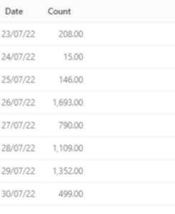
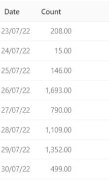

Issue Summary
Hey,
We are noticing a strange issue where text widgets/tabular widgets will have an out of focus, blurred text when displayed on a non-main display. This is happening to multiple people on our setup, on different displays i.e laptop monitors, 1980x1080 monitors, all with the similar pattern that it is fine when on the monitor that is the “main” display on the display settings in windows 11.
Here is an example, with the first image being the one on a different monitor from the main display:


For some reason, there is no effect on the labels/legends on the graphs, this seems to only happen with tabular and text widgets.
Has anyone else seen this? At this point I can’t tell if it’s just the way the front end works or if it’s something to do with our deployment, as we did not have this issue on v8, which we recently upgraded to v10.
Technical details:
- Redash Version: Version: 10.0.0 (9c928bd1)
- Browser/OS: Windows 11, Google Chrome 104.0.5112.82
- How did you install Redash: Kubernetes helm chart